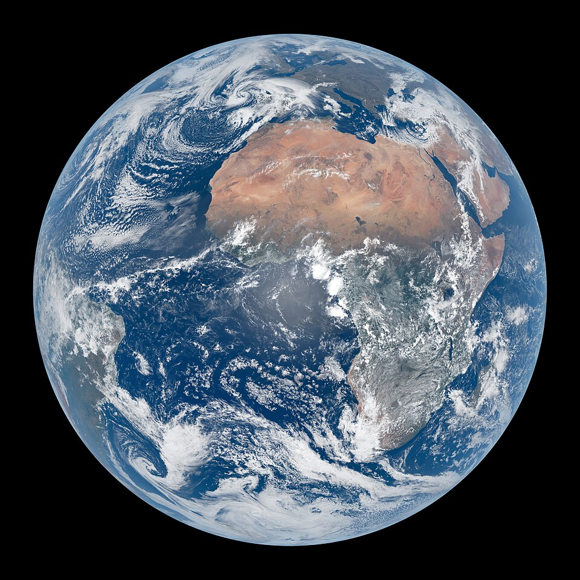

March equinox
Overview
Earth is rounded into an ellipsoid with a circumference of about 40,000 kilometres. It is the densest planet in the Solar System, and of the four rocky planets, it is the largest and most massive. Earth orbits the Sun at about eight light-minutes away, taking a year to complete one revolution, and is orbited by one permanent natural satellite, the Moon.
Formation
Earth, like most other bodies in the Solar System, formed about 4.5 billion years ago from gas and dust in the early Solar System. The formation of the ocean and the subsequent development of life occurred during the first billion years of Earth's history. The leading hypothesis for the Moon's origin is that it formed by accretion from material loosed from Earth after a Mars-sized object named Theia collided with Earth.
Physical characteristics
Earth has a rounded shape through hydrostatic equilibrium, with an equatorial diameter of 12,756 kilometres, making it the largest terrestrial object in the Solar System. It is composed mostly of iron, oxygen, silicon, and magnesium, with the core primarily made of denser elements like iron and nickel due to gravitational separation.
Internal structure
Earth's interior is divided into layers by chemical and physical properties, including a silicate crust, a viscous mantle, and a liquid outer core above a solid inner core. At the centre, the temperature may reach up to 6,000°C, with pressure reaching 360 GPa. Much of Earth's internal heat comes from primordial heat left over from formation and radiogenic heat from radioactive decay.
Plate tectonics
New continental crust forms as a result of plate tectonics, a process driven by the continuous loss of heat from Earth's interior. Over hundreds of millions of years, tectonic forces have caused areas of continental crust to group into supercontinents that later broke apart, including Rodinia, Pannotia, and Pangaea. The seven major plates are the Pacific, North American, Eurasian, African, Antarctic, Indo-Australian, and South American.
Surface
Most of Earth's surface is ocean water, covering 70.8% of the planet, often called the world ocean. Earth's land covers 29.2% of the surface, split mainly across four continental landmasses. The elevation of the land surface ranges from -418 m at the Dead Sea to 8,848 m at the top of Mount Everest.
Magnetic field
Earth's magnetic field is generated in the core through a dynamo process that converts kinetic energy from convection into electrical and magnetic field energy. The field extends from the core through the mantle to the surface, where it is approximately a dipole. This field defines Earth's magnetosphere, which deflects ions and electrons from the solar wind.
Moon
The Moon is a relatively large, terrestrial, planet-like natural satellite, with a diameter about one quarter of Earth's, making it the largest moon in the Solar System relative to the size of its planet. The Moon and Earth orbit a common barycenter every 27.32 days, and the gravitational attraction between them causes tides and has tidally locked the Moon's rotation to Earth.
Rotation & Orbit
Earth's rotation period relative to the Sun, its mean solar day, is 86,400 seconds. Earth orbits the Sun at an average distance of about 150 million km, taking 365.2564 days to complete one sidereal year. Earth's axial tilt of approximately 23.44 degrees causes the seasonal change in climate as different hemispheres receive varying angles of sunlight through the year.
Atmosphere
Earth's atmosphere is composed of 78.084% nitrogen, 20.946% oxygen, 0.934% argon, and trace amounts of other gases. Oxygenic photosynthesis evolved 2.7 billion years ago, forming the nitrogen-oxygen atmosphere seen today, along with the ozone layer that blocks ultraviolet radiation and permits life on land.
Hydrosphere
Earth's hydrosphere is the sum of Earth's water, with most of it held in the global ocean. About 97.5% of this water is saline, with the remaining 2.5% existing as fresh water, most of which is locked in ice caps and glaciers. The abundance of stable liquid water on Earth's surface is a unique feature that distinguishes it from other planets in the Solar System.
Life
Earth is the only known place that has ever been habitable for life, with life developing in Earth's early bodies of water roughly 4 billion years ago. Life has since significantly altered Earth's atmosphere and surface over long periods, including the Great Oxidation Event. Humans emerged 300,000 years ago in Africa and have since spread across every continent.
Human impact
Human activities have impacted Earth's environments, particularly through the burning of fossil fuels, which has increased greenhouse gases in the atmosphere and altered Earth's climate. Global temperatures in 2020 were estimated to be 1.2°C warmer than the preindustrial baseline, contributing to melting glaciers, rising sea levels, and increased risk of drought and wildfires. Of nine identified planetary boundaries, five have already been crossed, including climate change and biosphere integrity.